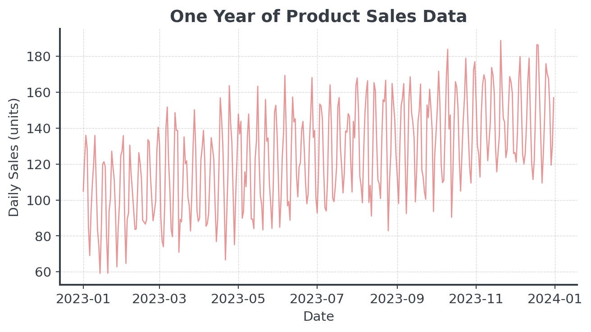
Forecasting the Future
Lecture 5 - Management Science
Introduction
Client Briefing: MegaMart Retail Chain
. . .
Operations Director’s Crisis:
“Last Christmas, we ran out of PlayStation 5s but had 500 unsold fitness trackers. We lost €2M in missed sales and clearance losses. How do we predict what customers will actually buy?”
Business: The Unknown Future
Question: Why can’t we just order the same as last year?
- Market: New products, competition
- Seasonal Shifts: Weather, holidays, economic conditions
- Trend Changes: Changing preferences, new technologies
- Randomness: Viral TikToks, supply chain disruptions, pandemics
. . .
Reality: Large retailers process several thousand orders per hour. Each stockout basically means lost revenue + unhappy customers.
Core Concepts
Decomposing Time Series
Time series can often be decomposed:
. . .
\[Y_t = T_t + S_t + R_t\]
. . .
Where:
- \(Y_t\) = Observed value at time t
- \(T_t\) = Trend component
- \(S_t\) = Seasonal component
- \(R_t\) = Random/Residual component
Additive vs Multiplicative Models
How do the components combine?
. . .
Additive Model \[Y_t = T_t + S_t + R_t\]
- Seasonal fluctuations are constant
- “We always sell 200 extra in December”
- Good: Stable, mature products
Multiplicative Model \[Y_t = T_t \times S_t \times R_t\]
- Seasonal fluctuations scale with trend
- “December sales are 40% higher”
- Good: Growing businesses
Visual Decomposition
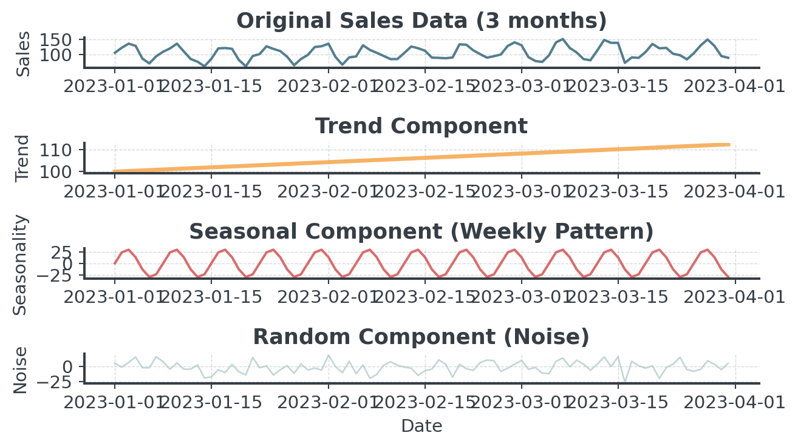
. . .
Here: Sales = Trend + Seasonality + Random Noise
Moving Average
Question: How do we separate signal from noise?
. . .
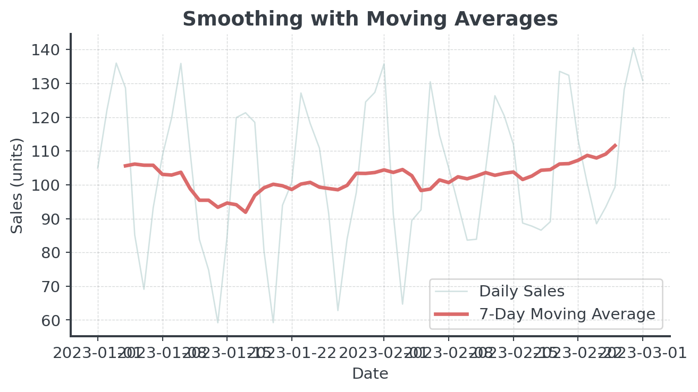
Simple vs Weighted Averages
Which forecast would you trust more?
. . .
Simple Moving Average
- All days equally important
- We just take the average
- [14, 15, 16, 14, 15, 16, 17]
- Forecast: 15.3
Weighted Moving Average
- Recent days matter more
- Days closer are weighted more
- [0.05, 0.05, 0.1, 0.1, 0.2, 0.2, 0.3]
- Forecast: 15.9
. . .
Recent data often predicts the future better than old data!
Exponential Smoothing Methods
Simple Exponential Smoothing
Not too simple, not too complex
. . .
\[\text{Forecast}_{t+1} = \alpha \times \text{Actual}_t + (1-\alpha) \times \text{Forecast}_t\]
. . .
- α (alpha) = smoothing parameter (0 to 1)
- α = 0.9: Trust recent data (reactive)
- α = 0.1: Trust historical patterns (stable)
- α = 0.3: Balanced approach (common default)
. . .
Think of \(\alpha\) like: How much do you trust the latest data point?
When Simple Smoothing Fails
Simple smoothing assumes the data is flat. What if it’s not?
/Users/vlcek/Documents/git-teaching/Management-Science/.venv/lib/python3.12/site-packages/pandas/util/_decorators.py:213: EstimationWarning: Model has no free parameters to estimate. Set optimized=False to suppress this warning
return func(*args, **kwargs)
/Users/vlcek/Documents/git-teaching/Management-Science/.venv/lib/python3.12/site-packages/pandas/util/_decorators.py:213: EstimationWarning: Model has no free parameters to estimate. Set optimized=False to suppress this warning
return func(*args, **kwargs)
Adding Trend
Holt’s Method: The Idea
Track TWO things separately: Level and Trend
- Level (L): Where are we right now? (like simple ES)
- Trend (b): How fast are we growing/declining per period?
- Forecast: Combine both: Level + (Trend × periods ahead)
. . .
Why This Works:
- Simple ES only tracks level (current position)
- Holt’s also tracks the slope (direction and speed)
. . .
Think of driving a car: Simple ES only knows your position. Holt’s also knows your speed!
Holt’s Method: The Math I
The formulas (simplified for intuition):
. . .
Level Equation: \[L_t = \alpha \times Y_t + (1-\alpha) \times (L_{t-1} + b_{t-1})\]
Trend Equation: \[b_t = \beta \times (L_t - L_{t-1}) + (1-\beta) \times b_{t-1}\]
Forecast Equation: \[\hat{Y}_{t+h} = L_t + h \times b_t\]
Holt’s Method: The Math II
In plain English
- Level: “Smooth current observation with previous forecast”
- Trend: “Smooth the change in level with our previous trend”
- Forecast: “Start at current, add trend for each period ahead”
. . .
Not too complicated, right?
Step-by-Step I
Let’s walk through 6 periods manually to build intuition
# Sample data with clear upward trend
sales_data = np.array([100, 105, 112, 118, 124, 130])
# Parameters
alpha = 0.3 # Level smoothing
beta = 0.2 # Trend smoothing
# Initialize
level = sales_data[0] # Start at first observation
trend = sales_data[1] - sales_data[0] # Initial trend estimate
print(f"Period 1: Level={level:.1f}, Trend={trend:.1f}")
# Store level and trend history for visualization
level_history = [level]
trend_history = [trend]Period 1: Level=100.0, Trend=5.0Step-by-Step II
# Apply Holt's method for periods 2-6
for t in range(1, len(sales_data)):
# Update level
prev_level = level
level = alpha * sales_data[t] + (1 - alpha) * (prev_level + trend)
# Update trend
trend = beta * (level - prev_level) + (1 - beta) * trend
# Store for visualization
level_history.append(level)
trend_history.append(trend)
print(f"Period {t+1}: Sales={sales_data[t]}, Level={level:.1f}, Trend={trend:.1f}")Period 2: Sales=105, Level=105.0, Trend=5.0
Period 3: Sales=112, Level=110.6, Trend=5.1
Period 4: Sales=118, Level=116.4, Trend=5.3
Period 5: Sales=124, Level=122.4, Trend=5.4
Period 6: Sales=130, Level=128.4, Trend=5.5Step-by-Step III
# Forecast next 3 periods
print(f"\nForecasts:")
forecast_values = []
for h in range(1, 4):
forecast = level + h * trend
forecast_values.append(forecast)
print(f" Period {len(sales_data)+h}: {forecast:.1f} units")
Forecasts:
Period 7: 134.0 units
Period 8: 139.5 units
Period 9: 145.0 unitsHolt’s Method: Visual Comparison
/var/folders/_5/jkkjxxdd5f1955l380dky7n80000gn/T/ipykernel_54290/673615079.py:17: UserWarning: linestyle is redundantly defined by the 'linestyle' keyword argument and the fmt string "o-" (-> linestyle='-'). The keyword argument will take precedence.
ax.plot(t_forecast, forecast_values, 'o-', color=BRAND_COLORS["threeDark"],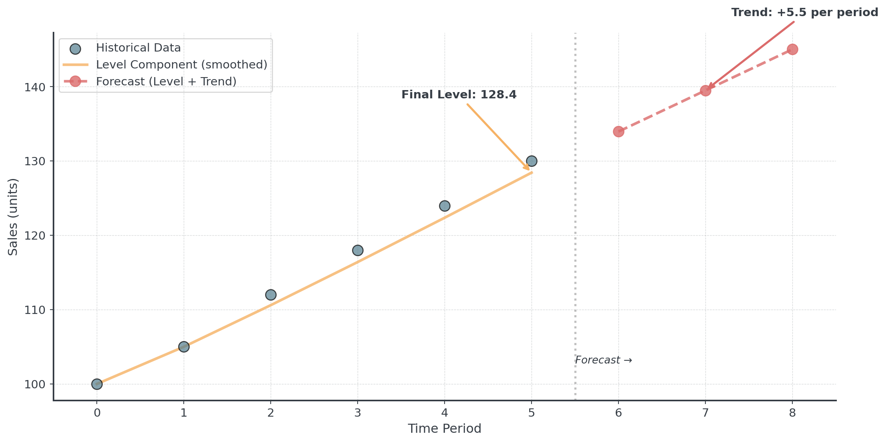
Choosing Alpha and Beta
How do you pick the right smoothing parameters?
. . .
Alpha (Level Smoothing)
- High α (0.7-0.9): Responsive
- Use: Volatile markets
- Low α (0.1-0.3): Stable
- Use: Steady business
Beta (Trend Smoothing)
- High β (0.5-0.8): Quickly
- Use: Dynamic growth/decline
- Low β (0.1-0.3): Stable trend
- Use: Consistent growth
. . .
Best Practice: Let the algorithm optimize parameters automatically!
. . .
You can implement Holt’s method using Python’s statsmodels library!
When to Use
Question: When should you use Holt’s method?
. . .
- Clear upward or downward trend
- No seasonal patterns
. . .
Question: When should you use NOT Holt’s method?
- Data is flat (use simple ES instead)
- Strong seasonality present
- Trend direction changes frequently
Adding Seasonality
The Problem: Trend + Seasonality
What if your data has BOTH trend AND seasonality?
. . .
/var/folders/_5/jkkjxxdd5f1955l380dky7n80000gn/T/ipykernel_54290/3228390177.py:6: FutureWarning: 'M' is deprecated and will be removed in a future version, please use 'ME' instead.
months = pd.date_range(start='2023-01-01', periods=36, freq='M')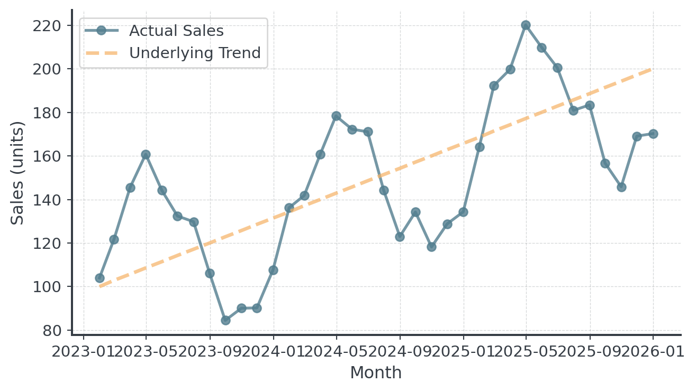
Holt-Winters: Three Components
Track THREE things separately: Level, Trend, AND Seasonality
- Level (L): Current baseline demand (deseasonalized)
- Trend (b): Growth rate per period
- Seasonal Indices (s): Multipliers for each season
Holt-Winters Visualized
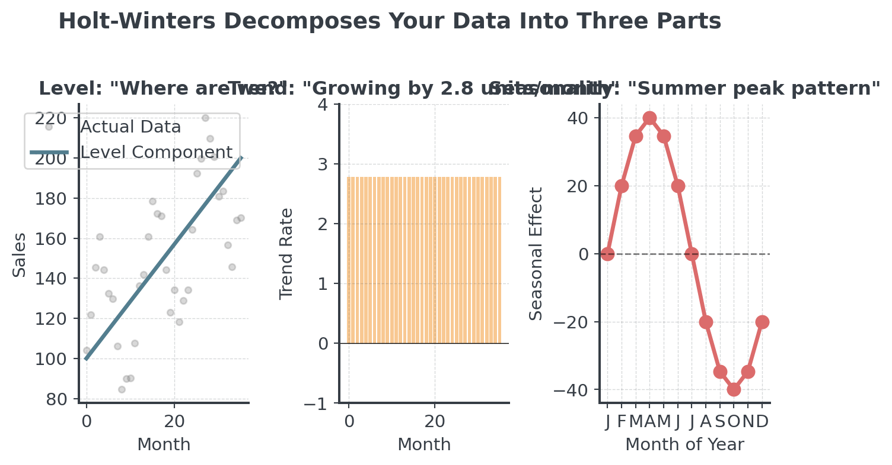
Seasonality
How does seasonality combine with the level?
. . .
Additive Model \[Y_t = L_t + b_t + s_t\]
- Seasonal variation is constant
- “We sell +50 units every December”
- Pattern: ±constant amount
Multiplicative Model \[Y_t = L_t \times b_t \times s_t\]
- Seasonal variation scales with level
- “December is 1.5× normal sales”
- Pattern: ×percentage change
Holt-Winters: The Math I
The formulas (don’t panic - Python does this for you!)
. . .
Additive Model:
\[L_t = \alpha(Y_t - s_{t-m}) + (1-\alpha)(L_{t-1} + b_{t-1})\] \[b_t = \beta(L_t - L_{t-1}) + (1-\beta)b_{t-1}\] \[s_t = \gamma(Y_t - L_t) + (1-\gamma)s_{t-m}\] \[\hat{Y}_{t+h} = L_t + hb_t + s_{t+h-m}\]
Holt-Winters: The Math II
In plain English
- Level: Remove seasonality from observation, then smooth
- Trend: Same as Holt’s method
- Seasonal: Update the seasonal index for this period
- Forecast: Level + trend + seasonal adjustment
. . .
Parameters:
\(\alpha\) (level), \(\beta\) (trend), \(\gamma\) (seasonal), m (seasonal period length)
Holt-Winters: Intuition I
Understanding seasonal patterns with quarterly sales
. . .
Quarterly Sales Pattern:
- Q1: Low season (after holidays) → Factor: 0.85
- Q2: Spring pickup → Factor: 0.95
- Q3: Summer growth → Factor: 1.05
- Q4: Holiday peak! → Factor: 1.15
Holt-Winters: Intuition I
How Holt-Winters Works
- Deseasonalize the data (remove seasonal effect)
- Calculate trend from deseasonalized data
- Update seasonal indices based on actual vs. expected
- Forecast by combining level + trend + seasonal pattern
. . .
Q4 is typically 35% higher than Q1 in retail! Holt-Winters captures this automatically.
Holt-Winters: Visual
/var/folders/_5/jkkjxxdd5f1955l380dky7n80000gn/T/ipykernel_54290/3325181793.py:5: FutureWarning: 'M' is deprecated and will be removed in a future version, please use 'ME' instead.
months = pd.date_range('2022-01-01', periods=24, freq='M')
/var/folders/_5/jkkjxxdd5f1955l380dky7n80000gn/T/ipykernel_54290/3325181793.py:21: FutureWarning: 'M' is deprecated and will be removed in a future version, please use 'ME' instead.
forecast_dates = pd.date_range(historical_dates[-1] + pd.DateOffset(months=1),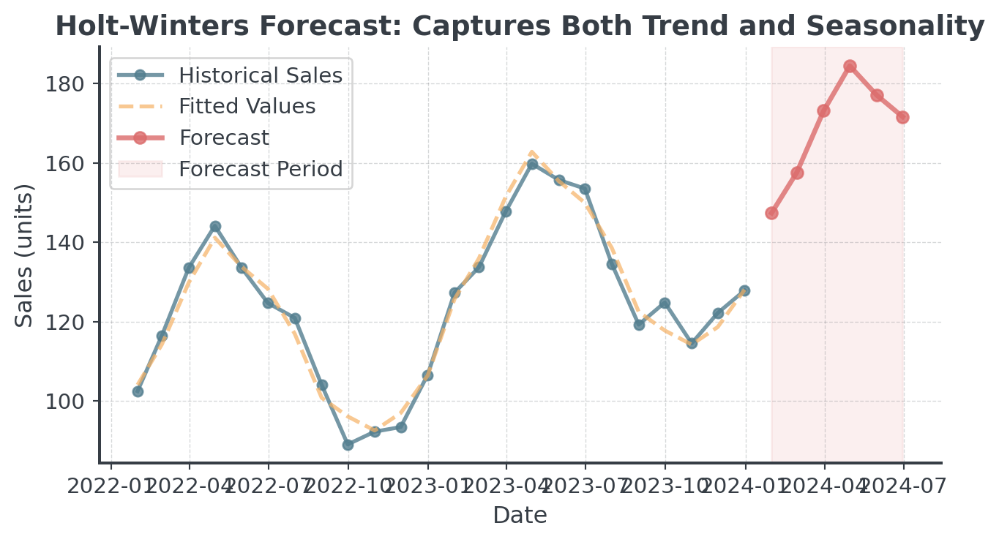
. . .
Notice how the forecast continues the seasonal pattern while following the trend!
When to Use Holt-Winters
Question: When should you use Holt-Winters method?
. . .
- Data with trend AND seasonality
- At least 1 full seasonal cycle (2 are better!)
- Regular, repeating patterns
. . .
Question: When should you AVOID Holt-Winters method?
. . .
- Irregular or changing seasonal patterns
- Flat data with no trend
- Seasonal pattern length unknown
Method Selection & Validation
Measuring Forecast Accuracy
How wrong were we?
. . .
Mean Absolute Error (MAE): Average size of mistakes \[\text{MAE} = \frac{1}{n} \sum_{i=1}^{n} |Actual_i - Forecast_i|\]
. . .
Root Mean Squared Error (RMSE): Penalizes large errors more \[\text{RMSE} = \sqrt{\frac{1}{n} \sum_{i=1}^{n} (Actual_i - Forecast_i)^2}\]
Forecast Accuracy
Easy with Python
# Example: Compare two forecasting methods
actual = np.array([100, 105, 110, 108, 112])
forecast_a = np.array([98, 107, 109, 110, 111])
forecast_b = np.array([102, 103, 112, 106, 113])
mae_a = np.mean(np.abs(actual - forecast_a))
mae_b = np.mean(np.abs(actual - forecast_b))
print(f"Method A - MAE: {mae_a:.2f} units")
print(f"Method B - MAE: {mae_b:.2f} units")
print(f"\nBetter method: {'A' if mae_a < mae_b else 'B'}")Method A - MAE: 1.60 units
Method B - MAE: 1.80 units
Better method: AWhen to Use Which Method?
. . .
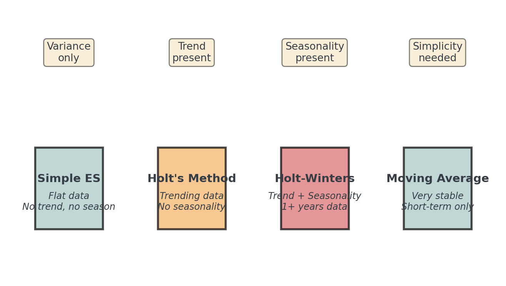
. . .
Start simple: Try moving average first as baseline, then add complexity only if needed!
The Real Cost of Being Wrong
Not all forecast errors are equal!
. . .
Example: Winter Coats
- Cost: €50, Selling Price: €150, Margin: €100
- Storage cost: €5/month
- Clearance markdown: 70% off
. . .
Question: What is your intuition here?
Under and Overforecasting
Sometimes it’s cheaper to overstock than to miss sales!
. . .
Underforecast by 100 units:
- Lost profit: 100 × €100
- €10,000
- Customer disappointment
- Competitor gains market share
Overforecast by 100 units:
- Storage: 100 × €5 × 3 months
- €1,500
- Clearance loss: 100 × €70
- €7,000
. . .
The “best” forecast depends on your business context.
Method Implementation
Your Python Practice Notebook
All the hands-on coding happens in the interactive tutorial!
. . .
- Working with dates in Pandas
- Implementing moving averages
- Building forecast functions
- Applying Holt’s method
- Using Holt-Winters
- Measuring accuracy
. . .
The notebook guides you step-by-step through Bean Counter’s seasonal demand forecasting challenge!
AI & Machine Learning Forecasting
The Promise of AI
Can machines predict better than classical methods?
What AI/ML brings to forecasting:
- Handle hundreds of variables simultaneously
- Detect complex non-linear patterns
- Learn from massive datasets
- Adapt automatically to changes
. . .
AI doesn’t replace human judgment, it augments it when you have enough data!
Common AI/ML Forecasting
Overview of popular techniques
. . .
Traditional ML:
- Random Forest: Ensemble of decision trees
- XGBoost: Gradient boosting (very popular)
- Support Vector Machines: Pattern recognition
Deep Learning:
- LSTM (Long Short-Term Memory): For sequences
- Prophet (Facebook): Automated forecasting
- Neural Networks: Complex patterns
. . .
More complex ≠ Better! Simple methods often win in forecasting.
The Issue: Overfitting
Question: What happens when we train an AI on all our data and use it to predict… the same data?
. . .
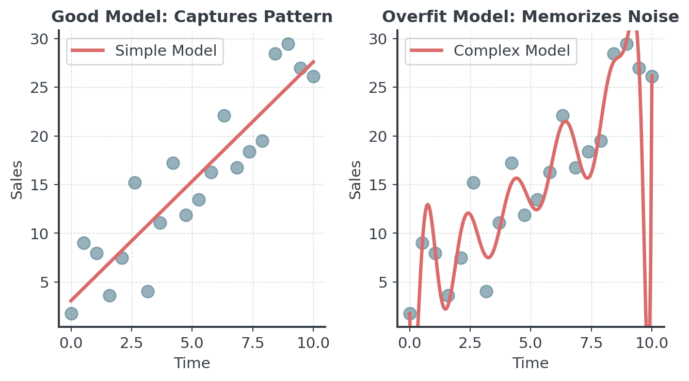
Training vs Test Data
Never judge a complex model on the data it learned from!
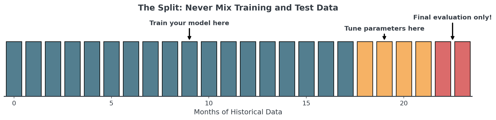
- Training Data: Where the model learns patterns (70-80%)
- Validation Data: Where you tune hyperparameters (10-15%)
- Test Data: The “future”, only once for final evaluation (10-15%)
Data Leakage: The Silent Problem
When future information sneaks into your training data
. . .
- Target leakage
- Wrong: Including “total_sales” when predicting “monthly_sales”
- Right: Only use information available at prediction time
- Temporal leakage
- Wrong: Random split for time series (mixes past and future)
- Right: Always split chronologically
. . .
Data leakage can make a terrible model look amazing… until it fails in production!
Time Series Cross-Validation
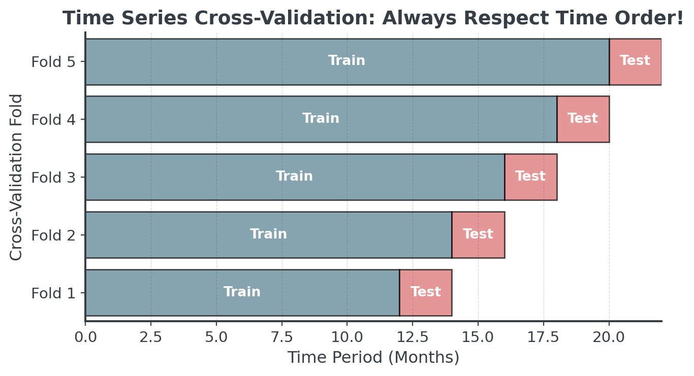
. . .
Unlike regular cross-validation, we NEVER use future data to predict the past!
When to Use AI/ML Forecasting I
Use AI when you have:
. . .
- Sufficient historical data (2+ years)
- Rich feature data (weather, promotions, events)
- Non-linear patterns
- Resources for training/maintenance
. . .
Examples:
- Large retailers (Amazon, Walmart)
- Demand forecasting with many variables
When to Use AI/ML Forecasting II
Don’t use AI when you have:
. . .
- Limited historical data
- High noise, low signal
- Need explainable forecasts
- Limited expertise
. . .
Examples:
- New products (no history)
- Regulatory environments
Advanced Topics
Forecast Horizons
How far into the future can we predict?
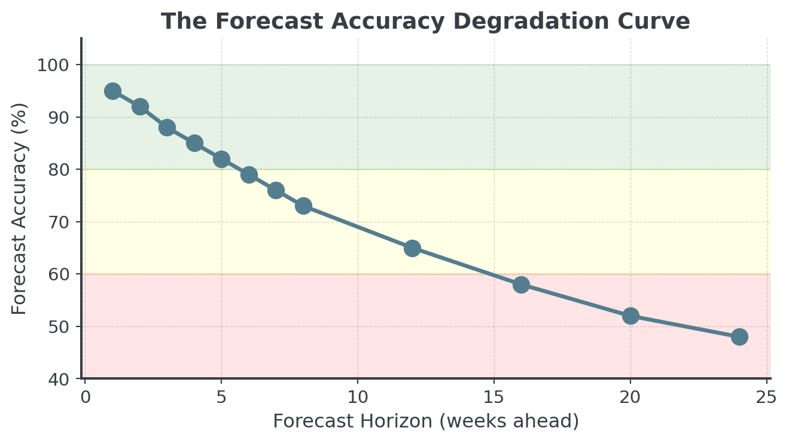
Confidence Intervals
A forecast without confidence intervals is incomplete!

Forecast Combination
Why choose one method when you can combine several?
. . .
# Example: Combining multiple forecasts
ma_forecast = 120 # Moving average prediction
exp_forecast = 125 # Exponential smoothing prediction
seasonal_forecast = 135 # Seasonal model prediction
# Simple average (equal weights)
simple_combo = (ma_forecast + exp_forecast + seasonal_forecast) / 3
print(f"Simple combination: {simple_combo:.0f} units")
# Weighted average (based on historical accuracy)
weights = [0.3, 0.5, 0.2] # Exp smoothing was most accurate historically
weighted_combo = (ma_forecast * weights[0] +
exp_forecast * weights[1] +
seasonal_forecast * weights[2])
print(f"Weighted combination: {weighted_combo:.0f} units")Simple combination: 127 units
Weighted combination: 126 unitsLead Times and Safety Stock
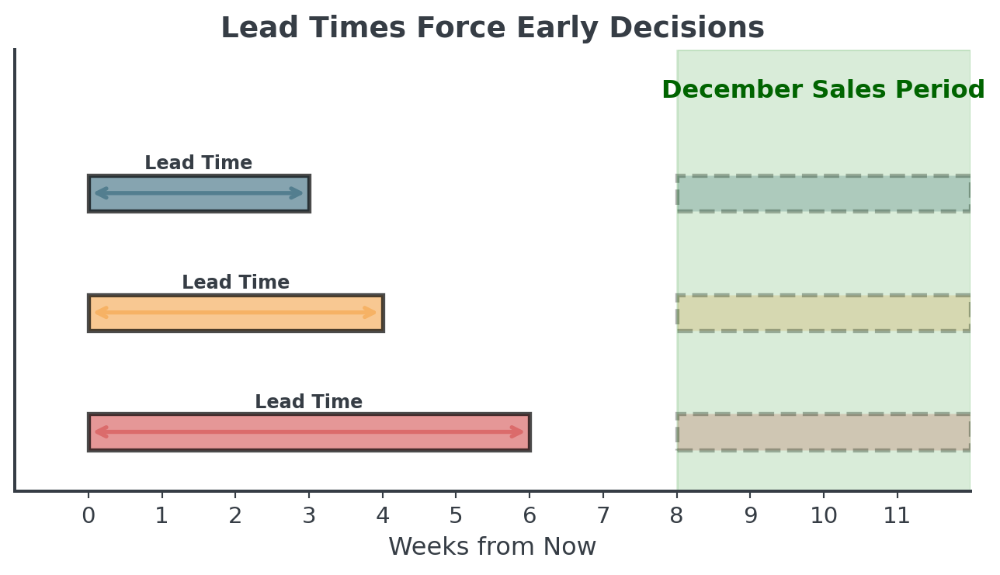
. . .
Long lead times = Forecasting further out = Less accuracy = More safety stock!
Safety Stock Calculation
How much buffer do you need?
. . .
# Safety stock formula
import scipy.stats as stats
avg_weekly_demand = 300; std_weekly_demand = 40; lead_time_weeks = 3
service_level = 0.95 # Want 95% availability
# Z-score for 95% service level
z_score = stats.norm.ppf(service_level)
# Safety stock calculation
safety_stock = z_score * std_weekly_demand * np.sqrt(lead_time_weeks)
reorder_point = (avg_weekly_demand * lead_time_weeks) + safety_stock
print(f"Average demand during lead time: {avg_weekly_demand * lead_time_weeks} units")
print(f"Safety stock needed: {safety_stock:.0f} units")
print(f"Reorder point: {reorder_point:.0f} units")Average demand during lead time: 900 units
Safety stock needed: 114 units
Reorder point: 1014 unitsToday’s Tasks
Today
Hour 2: This Lecture
- Patterns & decomposition
- Simple ES, Holt’s, Holt-Winters
- Method selection
- Practical pandas
Hour 3: Notebook
- Bean Counter CEO
- Daily and weekly aggregation
- Implement methods
- Compare accuracy
Hour 4: Competition
- MegaMart challenge
- 3 real products
- 4-week forecast
- €10K per error unit!
The Competition Challenge
“The Christmas Predictor”
. . .
- Analyze 2 years of weekly sales for 3 products
- Identify patterns (trend, seasonality, volatility)
- Forecast 4 December weeks for each product
- Minimize Mean Absolute Error across all 12 predictions
Key Takeaways
Remember This!
The Rules of Forecasting
- Always plot first - Your eyes catch patterns algorithms miss
- Start simple - Complexity is not your friend
- Recent matters more - Weight recent data higher
- Match method to pattern - Trend? Seasonality? Match!
- Validate on holdout - Never test on training data
- Add confidence intervals - Uncertainty is information
- Consider business context - Cost of errors matters
Final Thought
Forecasting is both art and science
. . .
The Science:
- Statistical methods
- AI based forecasting
- Error metrics (MAE, RMSE)
- Confidence intervals
- Systematic validation
The Art:
- Choosing the right method
- Balancing complexity vs simplicity
- Interpreting context
- Communicating uncertainty
. . .
Make better decisions, not perfect predictions!
Break!
Take 20 minutes, then we start the practice notebook
Next up: You’ll become Bean Counter’s forecasting expert, preparing for seasonal demand!
Then: The MegaMart Christmas Challenge!